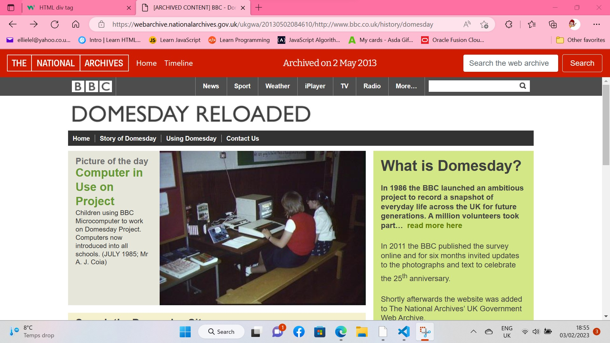
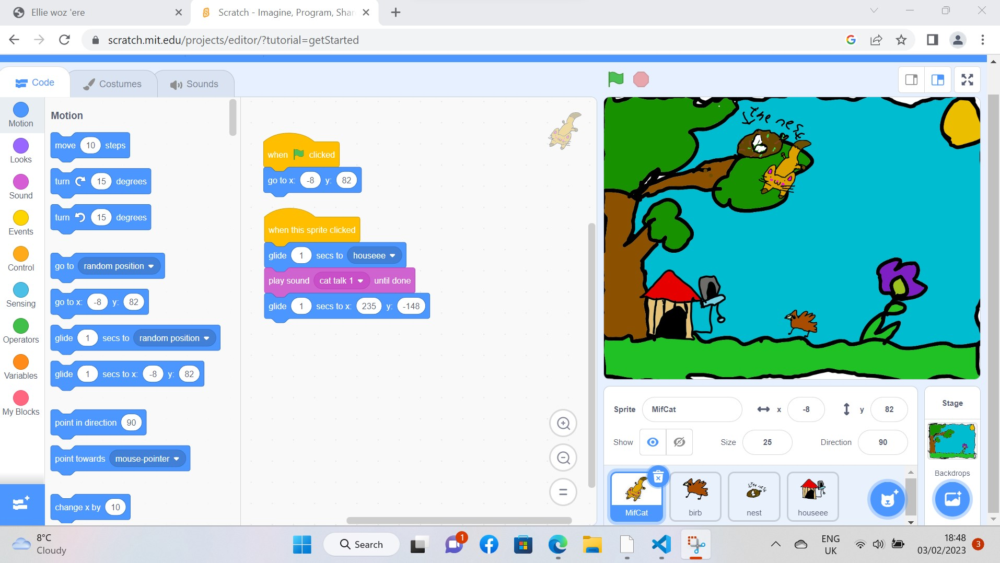
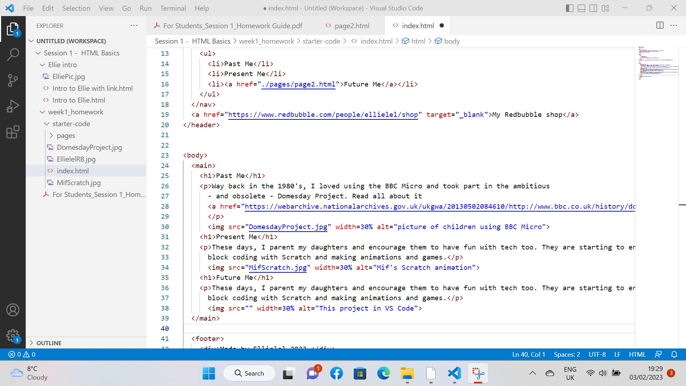

Ellie woz 'ere!
Past Me
Way back in the 1980's, I loved using the BBC Micro and took part in the ambitious - and obsolete - Domesday Project. Read all about it here.
Present Me
These days, I parent my daughters and encourage them to have fun with tech too. They are starting to enjoy block coding with Scratch and making animations and games. It's just me and them so I'm bringing them up to be feisty, brave and adventurous.
Future Me
I'm excited to learn Web Dev because it's time to use my energy, creativity and passions in ways that are better for me. I like designing patterns, making lino prints, forest bathing and foraging for wild edible plants.
